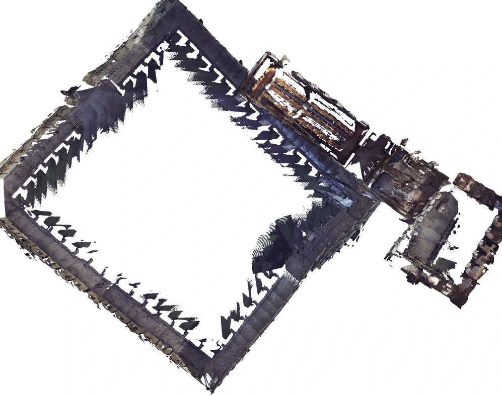
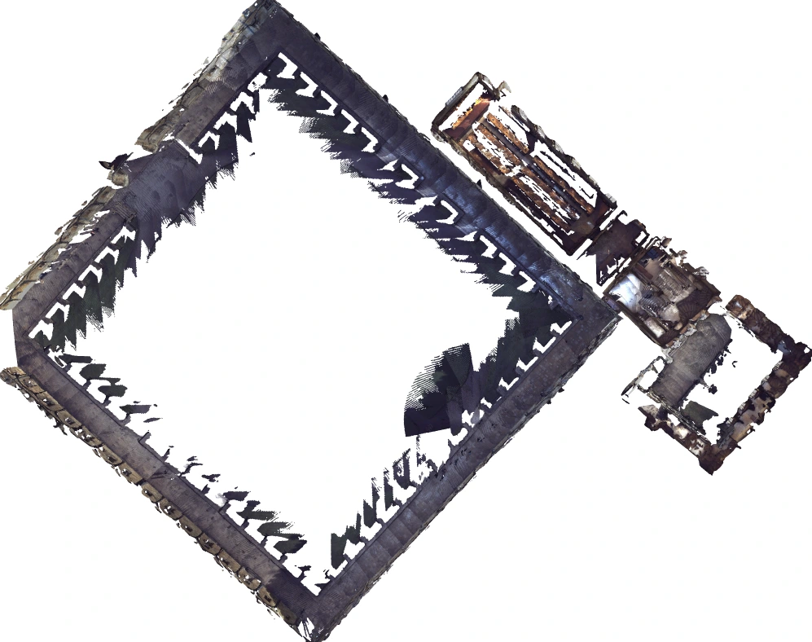

Freeze the foundation model
Reuse camera and dense features from VGGT, VGGT-Ω, or Depth Anything 3. Preserve the original camera and depth predictions.
GEOMETRIC FOUNDATION MODELS · PREDICTIVE UNCERTAINTY
Making Geometric Foundation Models Probabilistic
with Predictive Covariances
Geometric foundation models recover impressive 3D structure. Downstream estimators also need to know how much to trust it.
FoundationCov attaches learned covariances to a frozen model’s predictions: dense depth variance, a full 6 × 6 relative pose covariance for any frame pair, and camera intrinsics covariance. The geometric predictions themselves stay unchanged.
These covariances replace constant noise models and heuristic weights in alignment, mapping, and visual–inertial estimation.
Geometric backbones
VGGT · VGGT-Ω · DA3
Full pose covariance
For any frame pair
Downstream datasets
EuRoC · Aria · ScaRF · Spires
Average trajectory error reduction
Reported in the paper across four datasets
Feed-forward geometric foundation models demonstrate remarkable capabilities in recovering 3D scene geometry and camera poses from a sequence of images. However, despite their impressive accuracy, these models typically provide deterministic predictions with limited characterization of their uncertainty, making it difficult to reliably incorporate their outputs into downstream geometric estimation and sensor fusion pipelines. In this work, we introduce FoundationCov, a general covariance prediction framework for feed-forward geometric foundation models that jointly estimates dense pixelwise depth uncertainty, full 6-DoF relative pose covariance, and camera intrinsics covariance. Extensive experiments demonstrate that FoundationCov produces covariances that reflect the observed errors on unseen datasets without test-time calibration and improves downstream performance in uncertainty-aware multi-view reconstruction and visual-inertial estimation. Our work takes a step toward transforming feed-forward geometric foundation models from standalone reconstruction systems into probabilistic measurement providers for downstream 3D perception and estimation. Our code and model checkpoints will be publicly available.
Predicted covariances on unseen data.
Examples from VGGT-Ω.
DENSE DEPTH VARIANCE
Predicted standard deviations reflect the spatial pattern of local RMS log-depth errors on unseen ETH3D scenes.
Gray regions indicate missing ground truth. These are measured errors and model predictions from the paper.
FULL 6-DOF COVARIANCE
A full 6 × 6 covariance describes the magnitude and directional structure of relative pose errors, including correlations.
TUM RGB-D example. The ellipses show predicted 2σ position uncertainty relative to the first frame.
FOCAL-LENGTH COVARIANCE
A full 2 × 2 covariance models uncertainty in the predicted log focal lengths. Its effects can be propagated into 3D geometry.
TUM RGB-D example. Ray-angle errors induced by focal-length estimation are compared with predicted standard deviations.
One head architecture, applied separately
to three pretrained geometric backbones.
Reuse camera and dense features from VGGT, VGGT-Ω, or Depth Anything 3. Preserve the original camera and depth predictions.
Learn relative pose and focal-length covariances from camera features, and dense depth variance with a separate trainable DPT branch.
Propagate the covariances into residuals and use their inverse to weight geometric constraints in existing estimators.
Compare VGGT-Bridge with its default weights
and with FoundationCov.
OXFORD SPIRES · VGGT-Ω
Replacing heuristic weights with propagated covariances reduces structural distortions in the reconstructed map.
Move the slider to compare the two reconstructions.


Trajectory error with default weighting
versus FoundationCov. Lower is better.
Dataset means from the paper’s complete-system evaluation. Bars share a common scale within each selection; percentages compare FoundationCov with the default weighting.
| Dataset | Default | FoundationCov | Reduction |
|---|
The paper also evaluates isolated Sim(3) alignment, loop closure, visual–inertial initialization, and zero-shot uncertainty calibration. Full protocols, ablations, failure cases, and limitations are included in the manuscript.
Read the full evaluationPAPER & RESOURCES
FoundationCov: Making Geometric Foundation Models
Probabilistic with Predictive Covariances
Code and model checkpoints will be publicly available. This review version presents the anonymous manuscript and its experimental results.
Release forthcoming